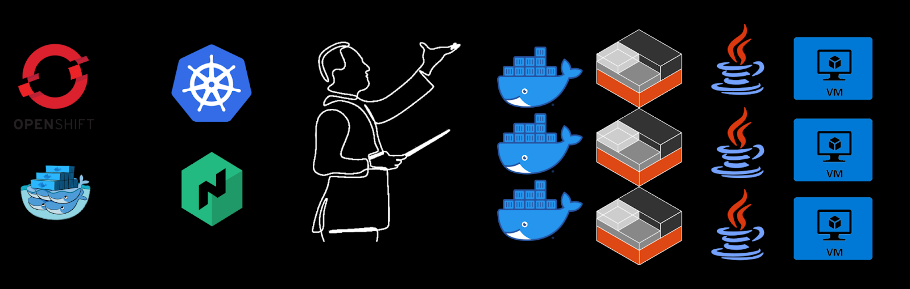

Оркестраторы контейнеров (Kubernetes vs Docker Swarm)
Оркестратор
Автоматизирует управление жизненным циклом микросервисных приложений
Инструменты оркестрации контейнеров требуются, когда вам нужно:
- управлять контейнерами и масштабировать их в нескольких инстансах;
- запускать множество различных контейнерных приложений;
- запускать разные версии приложений одновременно;
- обеспечивать непрерывность службы приложений в случае сбоя сервера, запустив несколько инстансов (реплик) контейнера;
Инструменты оркестрации контейнеров требуются, когда вам нужно:
- запускать несколько инстансов приложения в разных географических регионах;
- максимально использовать несколько инстансов серверов для составления бюджета;
- запускать большие контейнерные приложения, состоящие из тысяч различных микросервисов.
Docker Swarm

Kubernetes
Различия Docker Swarm и Kubernetes
Docker Swarm
- Сложная архитектура
- Установка требует немало усилий, так как нужно настроить множество компонентов и конфигураций
+ Подходит для управления крупномасштабными кластерами
+ Поддерживает интеграцию с большим количеством сторонних решений
Kubernetes
+ Более простая архитектура, легко интегрируется с Docker
+ Легко настраивается
- Справляется только с меньшими кластерами и не обладает столь мощными инструментами для масштабирования
- Поддержка сторонних инструментов и решений менее развита
Когда использовать Kubernetes
- Если ваше приложение состоит из множества микросервисов
- Если вам нужны строгие меры безопасности и детальное управление доступом
- Если вы используете облачные платформы
Кому подойдет Docker Swarm
- Небольшим проектам, где важна скорость развертывания и простота управления
- Небольшим командам, в которых нет выделенных специалистов по DevOps
- Проектам, где все узлы и ресурсы находятся в пределах одного дата-центра